Key System Capabilities
100% Offline-First Operations
Operates locally on Windows without cloud dependencies. Complete data privacy and instant speed.
Vehicle Registry with Photo Upload
Capture photos of vehicles on intake, store automatically inside SQLite, and track service history.
Workshop Kanban & Job Cards
Track vehicle repair progression from intake inspection through technician labor and parts allocation.
Executive Business Intelligence
Real-time profit & loss, operating expense breakdowns, technician commissions, and dead-stock alerts.
User Manual Table of Contents
- 1. Getting Started: First Launch & Business SelectionChapter 1
- 2. Staff Authentication & Account RecoveryChapter 2
- 3. Workshop Executive DashboardChapter 3
- 4. Vehicle Registry & Photo AttachmentChapter 4
- 5. Customer Directory & Customer ProfilesChapter 5
- 6. Service Catalogue & Labour ChargesChapter 6
- 7. Spare Parts Inventory & Stock MovementsChapter 7
- 8. Workshop Job Cards & Service WorkflowChapter 8
- 9. Formal Quotations & EstimatesChapter 9
- 10. Bay Scheduling & AppointmentsChapter 10
- 11. POS Invoicing, Payments & ReceiptsChapter 11
- 12. Cash Drawer Reconciliation & Operating ExpensesChapter 12
- 13. Business Intelligence (BI) Analytics & ReportsChapter 13
- 14. System Settings, Security & Disaster RecoveryChapter 14
- 15. Troubleshooting & Frequently Asked QuestionsChapter 15
1. Getting Started: First Launch & Business Selection
The system supports multi-tenant isolation, allowing you to manage multiple workshops or garage branches on the same computer with zero risk of mixed records.
When launching the application:
- If opening for the first time, click + Add New Business Account to create your garage profile, currency symbol, and initial administrator credentials.
- Select your active business account from the list to load its isolated database.
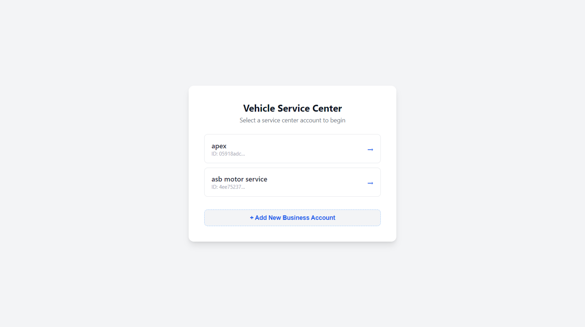
Figure 1.1: Business Account Selection screen with multi-tenant garage switcher.
2. Staff Authentication & Account Recovery
Staff members log in using their assigned username and password. The system includes zero-data-loss account recovery safeguards:
2.1 Staff Login
- Enter your Username and Password.
- Click Sign In. The system authenticates against local bcrypt hashes and opens your role-assigned modules.
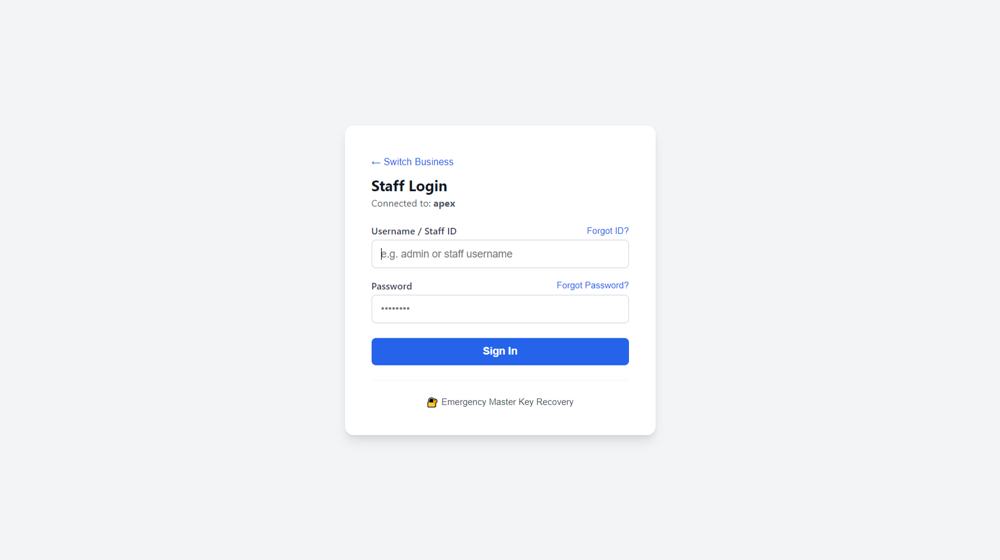
Figure 2.1: Staff Login interface connected to active business database.
2.2 Self-Service "Forgot Password?" Recovery
If you forget your password, you will never lose access to your account:
- Click Forgot Password? on the login screen.
- Enter your Username.
- Answer your 3 configured Security Questions (e.g. "What was the make of your first car?").
- Enter your new password and click Reset Password. You can sign in immediately!
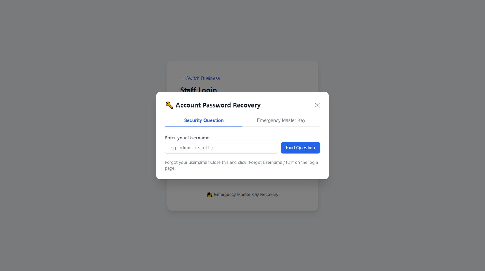
Figure 2.2: Password recovery modal using encrypted security question verification.
3. Workshop Executive Dashboard
The Dashboard provides an instant high-level overview upon logging in:
- Welcome Banner: Shows your user role and the active business profile.
- KPI Metric Cards: Displays system status, active account statistics, and enforced permission keys.
- Fast Navigation: Left-hand sidebar gives one-click access to all active operational modules.

Figure 3.1: Executive Workshop Dashboard interface.
4. Vehicle Registry & Photo Attachment
The Vehicle Registry provides full lifecycle tracking of all customer automobiles, including dynamic category classification, photos, and automated reminders:
4.1 Browsing & Searching Vehicles
- Search by license plate number, make, model, owner name, or phone number.
- Filter by vehicle category (e.g. SUV & Crossover, Sedan, Luxury & European).
- View vehicle photo thumbnails directly in the table.
- Click + Reminder to schedule service reminders (Oil Change, Insurance, License Renewal).
- Click Edit to modify details or Delete to safely deactivate the vehicle.

Figure 4.1: Live Vehicle Registry showing vehicle cards, category badges, and quick action buttons.
4.2 Registering a Vehicle with Photo Upload
- Click + Add Vehicle.
- Select the registered Customer / Owner.
- Enter the License Plate, Make, Model, Year, and Category.
- Upload Vehicle Photo: Click Change Photo to upload any image file (PNG, JPG, WEBP). The system automatically downscales and compresses the photo into a fast-loading thumbnail stored safely inside SQLite.
- Click Save Vehicle.
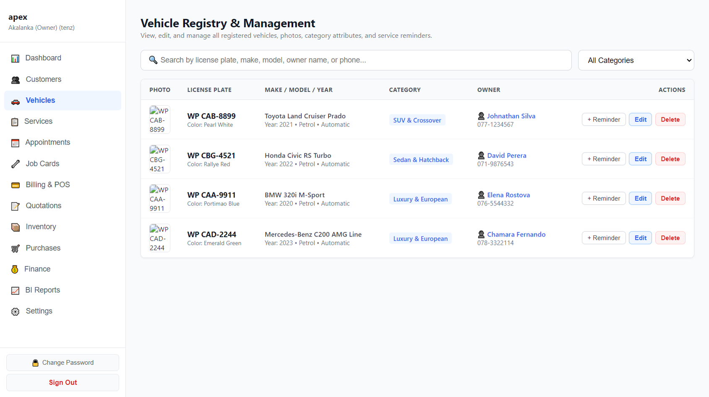
Figure 4.2: Vehicle Registration modal with live image upload and dynamic attributes.
5. Customer Directory & Customer Profiles
5.1 Customer Directory
Maintains your complete customer database with phone numbers, emails, national ID numbers (NIC), and physical addresses. Features duplicate detection to prevent redundant customer accounts.
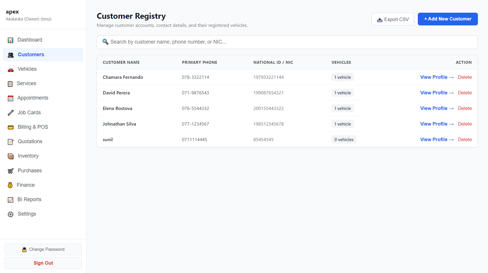
Figure 5.1: Customer Directory with real-time search and action controls.
5.2 Customer Detail Profile
Clicking any customer opens their complete 360-degree garage profile:
- Customer Info: Primary contact, secondary phone, email, and address.
- Registered Vehicles: Cards showing all vehicles owned by this customer with photos.
- Direct Actions: Register a new vehicle, edit customer details, or remove obsolete accounts.
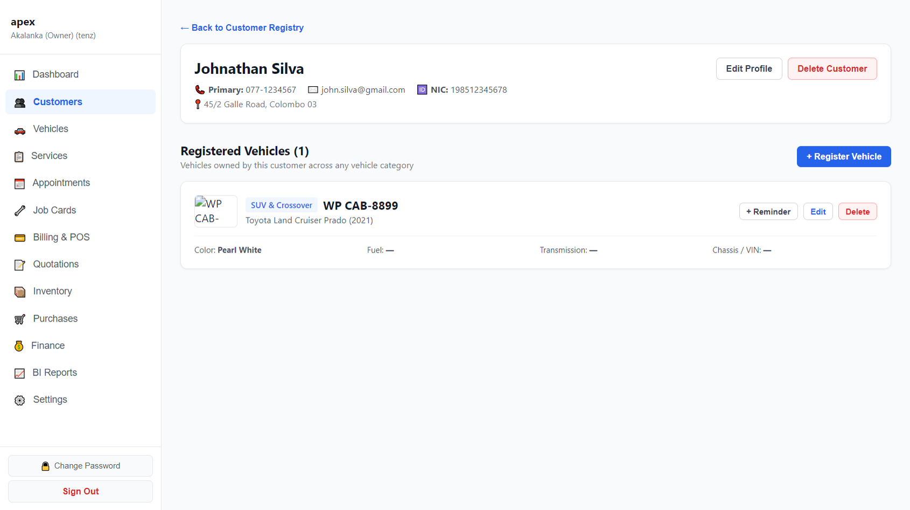
Figure 5.2: Customer Profile view showing registered vehicles and service history.
6. Service Catalogue & Labour Charges
The Service Catalogue defines workshop operations, standard labor rates, and estimated repair times:
- Base Price & Labour Charge: Set fixed service charges or technician labor fees.
- Estimated Duration: Allocates appropriate time slots in bay scheduling.
- Dynamic Vehicle Category Association: Customize service fees according to vehicle size.
- Click Remove to cleanly deactivate discontinued services without breaking past invoices.
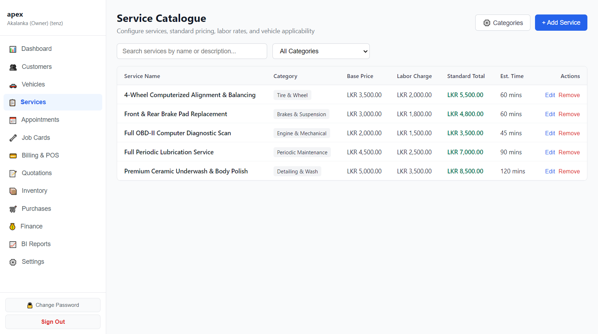
Figure 6.1: Service Catalogue showing categories, prices, labor charges, and estimated durations.
7. Spare Parts Inventory & Stock Control
Manage workshop spare parts with complete stock ledger traceability:
- SKU & Location: Track parts by unique part code and workshop rack/shelf location.
- Cost Price vs Selling Price: Automates profit margin calculation across all sales.
- Dynamic Stock Quantity: Calculated dynamically from append-only stock movements.
- Low Stock Warning Badges: Items falling below their reorder level are highlighted in red (e.g.
2 pcs LOW).
- Stock Adjustments: Click Adjust to record damages, write-offs, or manual adjustments.
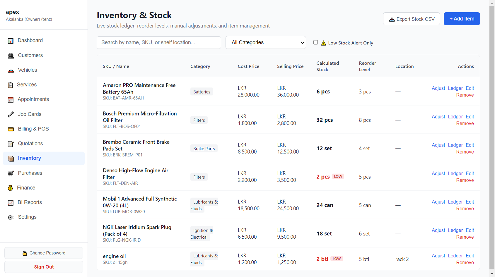
Figure 7.1: Live Inventory screen showing calculated stock, cost prices, and low-stock alerts.
8. Workshop Job Cards & Service Workflow
The Job Card is the central document coordinating technician repairs, parts allocation, and vehicle delivery:
- Intake: Record mileage in, fuel gauge reading, customer complaints, and intake checklist.
- Technician Assignment: Assign work to certified technicians for commission tracking.
- Add Services & Parts: Add catalogue services and allocate spare parts from active stock.
- Status Progression: Progress from Open → In Progress → Waiting for Parts → Completed.
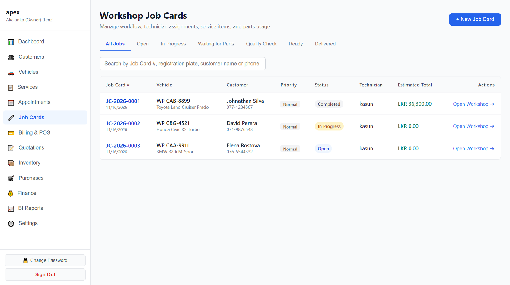
Figure 8.1: Workshop Job Cards pipeline tracking vehicle status, assigned technicians, and totals.
9. Formal Quotations & Estimates
Generate formal repair estimates for customer approval prior to initiating workshop labor:
- Tracks quotation status: Draft → Sent → Approved → Rejected.
- 1-Click Conversion: When approved, click Convert to Job Card to immediately generate an active workshop job card pre-loaded with all quoted parts and services.
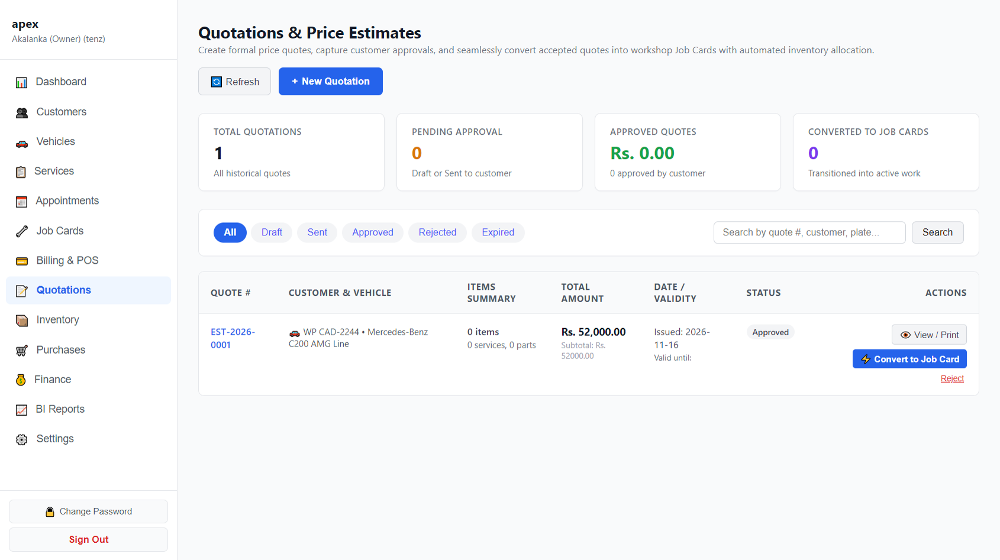
Figure 9.1: Formal Quotations register showing validity periods and approval status.
10. Bay Scheduling & Appointments
Book service bays in advance to prevent workshop congestion:
- Schedule customer appointments by date, time slot, and service bay number.
- Click Check-in to Job Card upon vehicle arrival to initiate immediate repair intake.
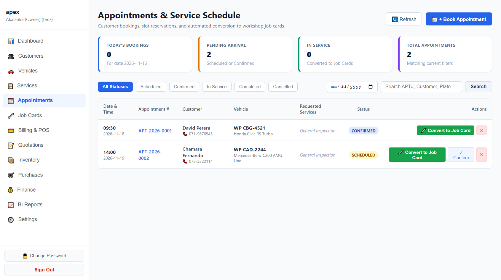
Figure 10.1: Service bay booking schedule and appointment tracker.
11. POS Invoicing, Payments & Receipts
Process customer billing from completed job cards or direct counter sales:
- Multi-Method Payments: Supports Cash, Credit/Debit Card, Bank Transfer, and Cheques.
- Dual Print Formats: Print 80mm thermal receipts or full A4 professional tax invoices.
- Safe Voiding: Voided invoices automatically log reverse stock movements, restoring spare parts to inventory.
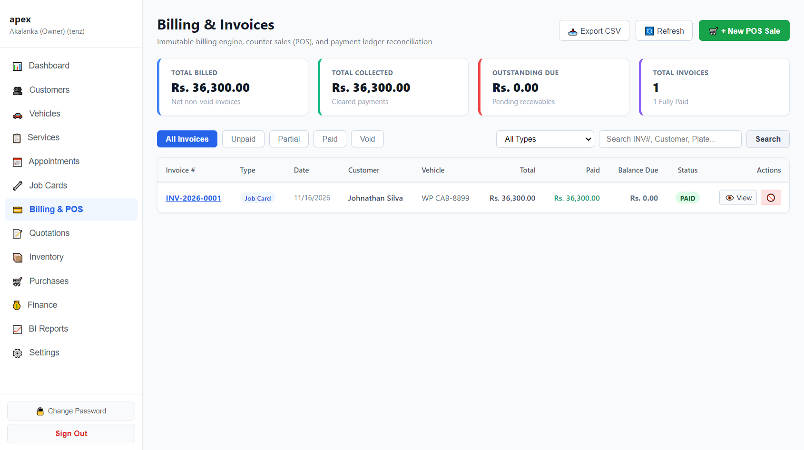
Figure 11.1: Billing register showing invoice numbers, customer names, and payment status.
12. Cash Drawer & Operating Expenses
Reconcile physical cash and track garage operating expenses:
- Cash Drawer: Open morning shift float, track POS collections, and calculate closing cash variance.
- Expense Ledger: Record utilities, equipment maintenance, tools, rent, and municipal fees.
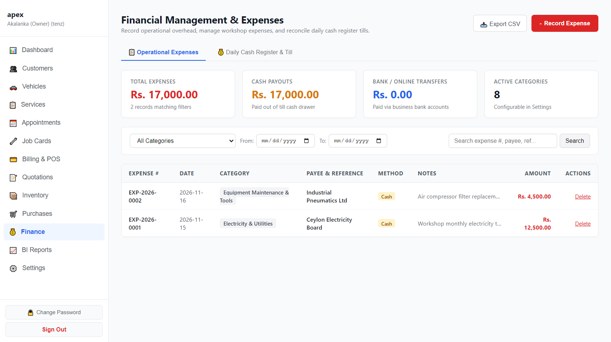
Figure 12.1: Operational expense ledger categorized for financial P&L reporting.
13. Executive Business Intelligence (BI) Analytics
The BI module provides real-time executive analytics with zero performance lag:
- Date Range Filtering: Quick presets for Today, This Week, This Month, This Quarter, and Custom Range.
- Profit Margins: Real-time calculation of Gross Margin and Net Workshop Profit.
- Technician Productivity: Tracks jobs completed, labor revenue, and calculated commissions.
- Dead Stock Alert: Automatically identifies inventory items with zero movements in the past 60 days.
- Customer Retention & LTV: Calculates repeat visit rates and identifies top-spending customers.

Figure 13.1: Executive BI Analytics calculating revenue, expenses, net margins, and cost breakdowns.
14. System Settings, Security & Disaster Recovery
Comprehensive administrative tools to manage users, security, and data integrity:
- User Accounts Management: Create staff users, assign roles, reset passwords, and delete accounts (protected by administrator password verification).
- Feature Toggles: Enable or disable modules (e.g. Quotations, Appointments, Finance) to streamline the UI.
- One-Click Hot Backup: Creates an instantaneous SQLite backup in
data/databases/backups/.
- Safe Restore: Automatically takes a pre-restore safety snapshot before restoring any database backup.
- Database Optimization (VACUUM): Cleans empty space and repacks database pages for peak speed.
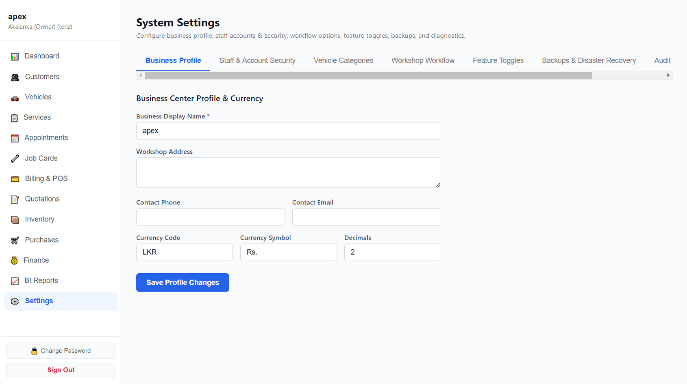
Figure 14.1: Administrative Settings screen managing users, backups, and feature toggles.
15. Troubleshooting & Frequently Asked Questions
Q: How do I recover an account if a staff member forgot their password?
A: Click "Forgot Password?" on the staff login screen and answer the 3 security questions to choose a new password. Alternatively, an Administrator can log in and reset the staff member's password in Settings > User Accounts.
Q: How does the system prevent accidental data loss when deleting records?
A: The system enforces non-destructive soft deletion (is_active = 0). Deleting a customer, vehicle, or service deactivates it from active lists while preserving historical job cards and tax invoices.
Q: How do I back up my garage data to a USB flash drive?
A: In Settings > Backups, click Create Hot Backup. You can also copy the data/ folder directly to an external flash drive or cloud sync folder (Google Drive, OneDrive).
Q: Can I use barcode scanners and thermal receipt printers?
A: Yes! The inventory SKU field supports standard USB barcode scanners, and the POS checkout supports standard 80mm ESC/POS thermal receipt printers as well as full A4 laser printers.